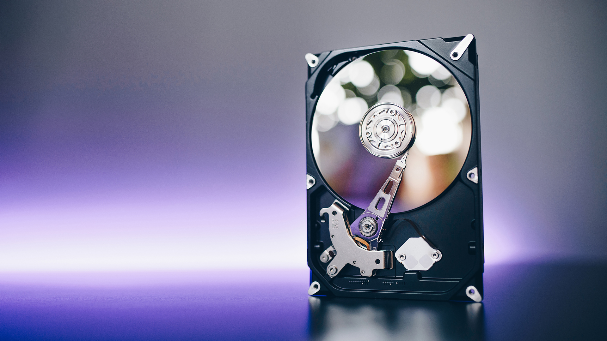
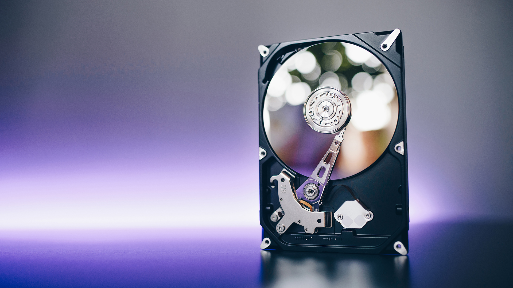

Monitor CRT
En el año 1923 se utilizó esta tecnología para los primeros televisores en blanco y negro, mientras que la televisión a color se desarrolló en el año 1940. Los monitores siguen este mismo proceso, primero se desarrollan en blanco y negro y más tarde se introducen los monitores a color. Las siglas de este tipo de monitor significan CadoticRayTube o tubo de rayos catódicos. EL monitor CRT es un dispositivo que permite la visualización de imágenes procedentes de la computadora por medio de un puerto de video hasta los circuitos del monitor. Utiliza electrones para transferir imágenes de una fuente de programa (probablemente una computadora o una antena). Para formar un color en pantalla que no sea ninguno de los colores básicos, se combinan entre sí los tres colores básicos. Los monitores CRT son tanto pesados como robustos, pero eran los tipos de monitores que eran asociados con las computadoras de escritorio por gran parte de los 80 y 90 hasta la revolución de paneles planos. Cuando la información que procede de la computadora ha sido procesada, se crean los gráficos por medio de un cañón que lanza electrones contra una pared de fosforo donde chocan generando una pequeña luz de color Son múltiples las ventajas de este tipo de monitores, entre las que cabe destacar, que permiten reproducir una mayor variedad cromática y es posible el ajuste de diferentes niveles de resolución. Entre las desventajas podemos encontrar que estas más desactualizados por lo que ocupan más espacio, debido al fondo que presentan, los modelos que son muy antiguos tienen una pantalla curva, los campos eléctricos afectan al monitor, produciendo que la pantalla vibre y necesitan para un buen disfrute un ajuste realizado por parte del usuario.
Monitor LCD
Las pantallas LCD compiten en el mercado doméstico contra las pantallas de plasma y pantallas LED, así como en el futuro contra pantallas 3D. Cada vez más populares, los monitores LCD ya son considerados, por muchos, indispensables para el uso de la computadora. No es para menos: además de que ocupan menos espacio, consumen menos energía y son más confortables para la vista que los CRT.La tecnología LCD no es empleada sólo en los monitores para computadoras. En el mercado, es posible encontrar dispositivos portátiles (como consolas de video, teléfonos celulares, calculadoras, cámaras digitales y handhelds) cuya pantalla es LCD. Además de eso, vale acordarse que las notebooks utilizan esta tecnología hace años. Esto sucede porque la tecnología LCD permite mostrar imágenes monocromáticas o color y animaciones en prácticamente cualquier dispositivo, sin la necesidad de un tubo de imagen, como sucede con los monitores CRT. Como indica el nombre, las pantallas de LCD están formadas por un material denominado cristal líquido. Las moléculas de ese material son distribuidas entre dos láminas transparentes polarizadas. Esa polarización es orientada de manera diferente en las dos láminas, de forma que se formen ejes polarizadores perpendiculares, como si formaran un ángulo de 90º. A groso modo, es como si una lámina recibiera polarización horizontal y la otra polarización vertical. Las moléculas de cristal líquido son capaces de orientar la luz. Cuando una imagen es mostrada en un monitor LCD, elementos eléctricos presentes en las láminas generan campos magnéticos que inducen al cristal líquido a “guiar” la luz que entra de la fuente luminosa para formar el contenido visual. Sin embargo, una tensión diferente puede ser aplicada, haciendo que las moléculas de cristal líquido se alteren de manera que impidan el pasaje de la luz. En las pantallas monocromáticas (comunes en relojes, calculadoras, etc.), las moléculas asumen dos estados: transparentes (la luz pasa) y opaco (la luz no pasa). Para pantallas que muestran colores, diferentes tensiones y filtros que trabajan sobre la luz blanca son aplicados a las moléculas. La luz del dispositivo, por su parte, puede provenir de focos especiales (generalmente fluorescentes) o de leds. Es válido recordar que, en el caso de dispositivos LCD con bombilla, éstas tienen una duración determinada. En el mercado, es posible encontrar monitores LCD cuyas bombillas duran 20 mil horas, 30 mil y hasta 50 mil horas.
Monitor táctil
Una pantalla táctil es una pantalla que mediante un toque directo sobre su superficie permite la entrada de datos y órdenes al dispositivo, y a su vez muestra los resultados introducidos previamente; actuando como periférico de entrada y salida de datos, así como emulador de datos interinos erróneos al no tocarse efectivamente. En otras palabras, la pantalla táctil permite que el usuario introduzca información al sistema y también se encarga de mostrar el resultado del procesamiento de dicha información. Las personas tocan la superficie de la pantalla para interactuar con el aparato en cuestión. Este contacto también se puede realizar por medio de un lápiz óptico u otras herramientas similares. Actualmente hay pantallas táctiles que pueden instalarse sobre una pantalla normal, de cualquier tipo (LCD, monitores y televisores CRT, plasma, etc.). Las pantallas táctiles se hicieron populares por su uso en dispositivos de la industria, ordenadores públicos (como exposiciones de museos, pantallas de información, cajeros automáticos de bancos, etc.) donde los teclados y los ratones no permiten una interacción satisfactoria, intuitiva, rápida, o exacta del usuario. Hay cajeros automáticos (ATMs) con pantalla táctil, a través de la cual el usuario puede ingresar información sobre su cuenta bancaria, elegir el tipo de operación que desea realizar, etc. También es posible encontrar pantallas táctiles en los museos (destinadas a presentar información de manera interactiva), en computadoras portátiles, en teléfonos móviles y en muchos otros dispositivos. Desde finales del siglo XX y especialmente en los comienzos del XXI alcanzan un uso habitual en la mayoría de los dispositivos con pantalla: monitores de computadora, teléfonos móviles, tabletas, etc.
Otros componentes
 
